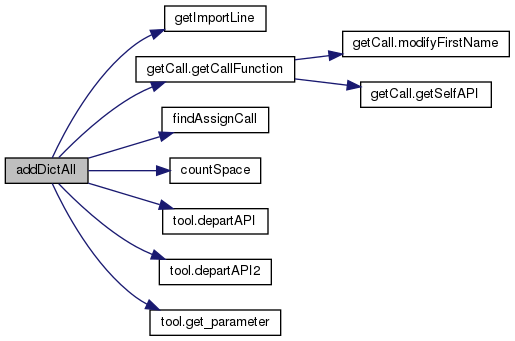
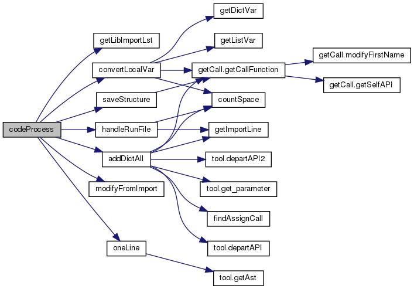
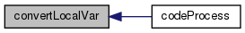

Functions | |
| def | addDictAll (projPath, projName, filePath, runFileLst, libName, runPath, runCommand) |
| def | addDictSingle (callAPI, filePath) |
| def | codeProcess (projPath, runCommand, runPath, libName) |
| def | convertLocalVar (filePath, libName) |
| def | countBracket (s) |
| def | countSpace (s) |
| def | findAssignCall (root) |
| def | getDictVar (root, ansLst) |
| def | getImportLine (codeLst) |
| def | getLibImportLst (projPath, libName) |
| def | getListVar (root, ansLst) |
| def | handleRunFile (file, runPath, runCommand) |
| def | ignore_sym_links (directory, files) |
| def | modifyFromImport (filePath, importStatement) |
| def | obtainDef (sourcePath) |
| def | oneLine (filePath) |
| def | saveStructure (projPath, libName) |
Function Documentation
◆ addDictAll()
| def preprocess.addDictAll | ( | projPath, | |
| projName, | |||
| filePath, | |||
| runFileLst, | |||
| libName, | |||
| runPath, | |||
| runCommand | |||
| ) |
Definition at line 332 of file preprocess.py.
369 if callAPI in codeLst[i].replace(' ','') and 'def ' not in codeLst[i] and 'paraValueDict' not in codeLst[i] and 'apiCoveredSet' not in codeLst[i] and codeLst[i].replace(' ','')[0]!='@':
389 if firstPart and (firstPart.split('.')[0] in targetLst or firstPart.split('.')[0]=='self') and len(l)==1:
400 if '(' not in para[0:pos] and "'" not in para[0:pos] and '"' not in para[0:pos] and para[pos+1]!='=': #等号前面也不能出现引号，比如f('x= ',y=1)
def addDictAll(projPath, projName, filePath, runFileLst, libName, runPath, runCommand)
Definition: preprocess.py:332
Here is the call graph for this function:

Here is the caller graph for this function:
◆ addDictSingle()
| def preprocess.addDictSingle | ( | callAPI, | |
| filePath | |||
| ) |
Definition at line 248 of file preprocess.py.
261 if callAPI.replace(' ','') in codeLst[i].replace(' ','') and 'def ' not in codeLst[i] and 'paraValueDict' not in codeLst[i]:
273 if firstPart and (firstPart.split('.')[0] in targetLst or firstPart.split('.')[0]=='self') and len(l)==1:
Here is the call graph for this function:

Here is the caller graph for this function:

◆ codeProcess()
| def preprocess.codeProcess | ( | projPath, | |
| runCommand, | |||
| runPath, | |||
| libName | |||
| ) |
Definition at line 837 of file preprocess.py.
926
def addDictAll(projPath, projName, filePath, runFileLst, libName, runPath, runCommand)
Definition: preprocess.py:332
def modifyFromImport(filePath, importStatement)
Definition: preprocess.py:692
def codeProcess(projPath, runCommand, runPath, libName)
Definition: preprocess.py:837
Here is the call graph for this function:

◆ convertLocalVar()
| def preprocess.convertLocalVar | ( | filePath, | |
| libName | |||
| ) |
Definition at line 94 of file preprocess.py.
Here is the call graph for this function:
Here is the caller graph for this function:

◆ countBracket()
| def preprocess.countBracket | ( | s | ) |
Definition at line 9 of file preprocess.py.
◆ countSpace()
| def preprocess.countSpace | ( | s | ) |

◆ findAssignCall()
| def preprocess.findAssignCall | ( | root | ) |

◆ getDictVar()
| def preprocess.getDictVar | ( | root, | |
| ansLst | |||
| ) |

◆ getImportLine()
| def preprocess.getImportLine | ( | codeLst | ) |
◆ getLibImportLst()
| def preprocess.getLibImportLst | ( | projPath, | |
| libName | |||
| ) |

◆ getListVar()
| def preprocess.getListVar | ( | root, | |
| ansLst | |||
| ) |
◆ handleRunFile()
| def preprocess.handleRunFile | ( | file, | |
| runPath, | |||
| runCommand | |||
| ) |
Definition at line 597 of file preprocess.py.
Here is the call graph for this function:

Here is the caller graph for this function:
◆ ignore_sym_links()
| def preprocess.ignore_sym_links | ( | directory, | |
| files | |||
| ) |
Definition at line 802 of file preprocess.py.
◆ modifyFromImport()
| def preprocess.modifyFromImport | ( | filePath, | |
| importStatement | |||
| ) |
Definition at line 692 of file preprocess.py.
def modifyFromImport(filePath, importStatement)
Definition: preprocess.py:692
Here is the caller graph for this function:
◆ obtainDef()
| def preprocess.obtainDef | ( | sourcePath | ) |
Definition at line 674 of file preprocess.py.
◆ oneLine()
| def preprocess.oneLine | ( | filePath | ) |
Definition at line 41 of file preprocess.py.
Here is the call graph for this function:

Here is the caller graph for this function:

◆ saveStructure()
| def preprocess.saveStructure | ( | projPath, | |
| libName | |||
| ) |
Definition at line 706 of file preprocess.py.
Here is the call graph for this function:

Here is the caller graph for this function:

Generated by
 1.8.13
1.8.13